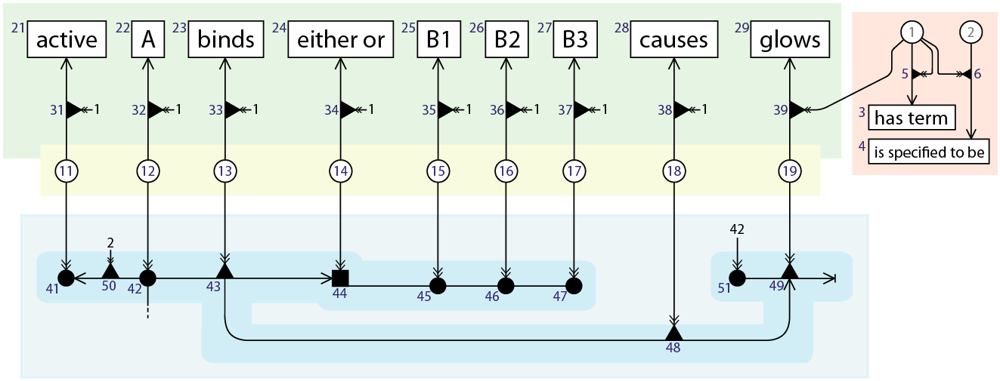
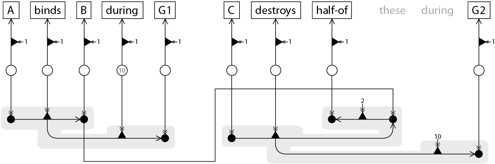

6. VSMGraphs
(This page is a stub, written some years before 2020.)
VSMGraphs are a way to represent the content of one or multiple VSM-sentences in a single graph.
Loosely spoken, it’s a bit like an integration of ‘semantic memory‘ (like ontology-based classifications)
and ‘episodic memory‘ (specific facts, like VSM‘s core functionality).
More text may follow later (based on a still-unpolished text I’ve written a while ago).
But maybe you can already get the gist from this preview? :

- Black nodes (round, triangle, square) represent ‘specific’ or ‘context-embedded’ concepts.
- Semantically, they are embedded in explicit (by their connected nodes) and implicit (simply not stated) context.
- They are the concepts that are created by making a VSM-sentence (by default).
- They are linked in a way that reflects VSM-connectors (e.g. ●—▲→●, as one object that connects three nodes).
- (The numbers are only there to make the graph less tangled).
- White nodes (there are only round ones) represent ‘general’ or ‘context-free’ concepts.
- Semantically, they are not embedded in any context (and are also not embedded so by connected terms). They just represent ‘the idea’ of a particular concept. E.g.: ‘Duck’, in general.
- Every black node is specified from a white node, or from another black node (a coreference sub-specifies it, adding extra (explicit and perhaps also implicit) context). – Specification is indicated with a double arrow: ↠.
- So all VSM-sentences (represented as VSMGraphs) are built with newly created black nodes, that are all specified from the same set of available white nodes.
- Rectangle nodes represent ‘data’. This could e.g. be a ‘literal string’ as label for a white node concept, or a protein sequence, or image data.
- How such raw data should be interpreted is indicated by any relation that connects to it, e.g. “has-jpeg-data”.
- The colored areas only serve to illustrate node functionality groups here:
- The blue area highlights one VSM-sentence.
- The yellow area highlights general, dictionary concepts. These would be shared between all VSM-sentences. (And they could be categorized in a hierarchy).
- The green area highlights the terms / labels for the dictionary concepts.
- The red area is just for a few utility terms (“has-term” and “is specified to be“).
Here’s another one : (the grey-shaded areas highlight two VSM-sentences’ individual subgraphs,
which are connected by a coreference between the two) :

And since we promised earlier that we’d explain this after a picture of a VSMGraph, here is:
📖 VSM Principle 4. General vs. specific concepts.
- general concepts are free from any ‘context’, while
- specific concepts are placed into an ‘implicit context’, and
- some of their implicit context is made explicit via tridents/bidents and list connectors.
- A coreference’d child inherits all of this context from its parent; except that some more of its context is made explicit, via its own connected terms.
Let’s elaborate on each:
1. A General Concept is a ‘general idea/understanding’ of something that we can have in our minds.
For example, the concept of Duck, in general, is not any specific duck.
So meaning-wise, it’s not ‘placed in’ any ‘context’ (which would make it specific) at all.
2+3. A Specific Concept, however, is one that we have mentally placed into some ‘context’
(i.e. associated ‘things/meanings’ that make the concept a particular thing).
Now, it is important to realize that this ‘context’ consists of two parts.
Most obviously, there is explicit context: this comes from all what is connected to the concept in a VSM-sentence, through tridents/bidents and list connectors.
But there is also implicit context: all the other things that aren’t said explicitly about it, and many of which we may not even know!
Just think about this example. When I tell you about a particular caffeine molecule that I observed in a biochemical experiment,
then I may describe which molecule I meant, e.g.: one that was bound to some receptor in the brain.
But I didn’t mention, nor do I often even know, some other context details that are implicitly attached to it, but that still make it particular.
For example, what exact location in the brain was the receptor? Were any other molecules possibly interacting with the caffeine?
And even more in detail, what isotopes of carbon did the caffeine consist of?
And even history-like context like: who produced the caffeine molecule/s (maybe it had impurities that influenced my experiment)?
Was it stored correctly? Who prepped it? Etc.
All these things are what make up any specific VSM-term’s implicit context. They are absent details,
but they are still what make the VSM-term a ‘specific thing’ in our minds. – So,
a specific concept is always embedded in lots of unspecified, ‘implicit context’.
– (This is what we also explained, in a bit ad-hoc manner,
in that section on the Examples page).
4. When you look at VSMGraphs, you may see that there can be hierarchies of concepts with more and more context: from general concept (white node), down to specific concept (black node), down to a coreferenced, more-specific child-concept (also black) (I like to call this: sub-specification of a concept), and so on. So if you’d build a story around some concepts, then you’d create chains of sub-specified concepts that get consecutively embedded into ever-more explicit context. (Like: attached details, or a growing history we’re learning about it). For example: Arnold woke up one morning. Then he saved the world. (Now the he is a concept of which we also already know that it woke up that morning). Then he jumped into a pool of lava. (Now he is subspecified again, and has again more explicit context attached). Etc. – So there is always opportunity to make a specific concept ever-more specified.
Read about an application of VSM on the SciCura page
Or skip to the About page
or go back to How VSM Works or the Summary page